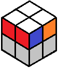
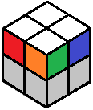

2x2 BEGINNER TUTORIAL
Turn the cube so that white is on top. Next we will look along the sides of the top pieces for "matching corners" - adjacent corners that have the same color on the same side.
|  | In this example, there are red matching corners. |
Matching Corners
If there are matching corners, turn the cube (or simply turn the top layer) so that the matching corners are on the left side. Then use this algorithm:
(RU2R'U') (RU2L'U) (R'U'R)
This algorithm makes the two right corners trade places, so now you should have a solved layer on top:
(front)
(back)
No Matching Corners
Sometimes there will be no matching corners.
If there are no matching corners, simply use the above algorithm with white on top. This will give you matching corners. Do the algorithm once more as described above.
Once the entire layer is solved, turn the cube so that white is once again on the bottom, and proceed to the next step.
 Back
Back